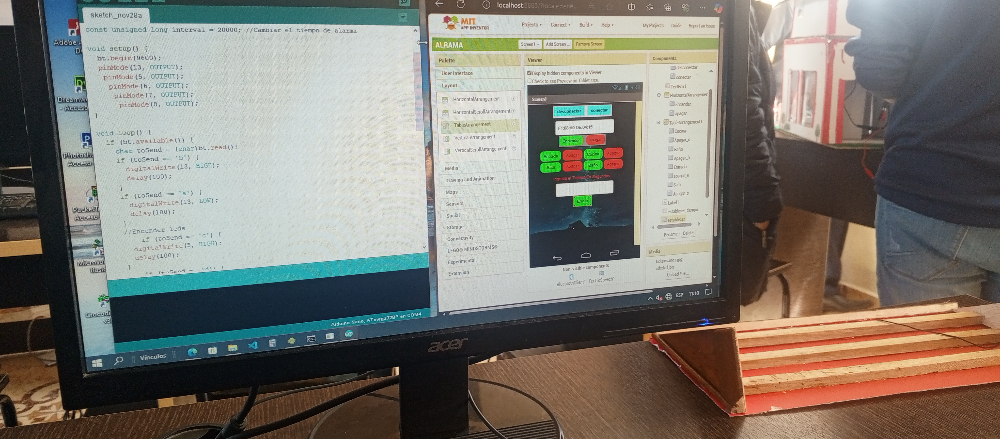

Iniciamos con los motores, estos le añadimos las aspas para que se ejecute la respectiva generacion de energia. Realizamos una conexiòn en paralela entre los motores para aumentar la potencia de generaciòn, posteriormente los aderimos a una base para mantener estabilidad y producciòn.
CASA DE REFERENCIA
Esta vivienda de madera está diseñada con un techo inclinado que no solo aporta un estilo moderno, sino que también incluye las conexiones necesarias para instalaciones eléctricas y ademàs es el lugar donde residira la alarma.
PROTOBOARD
El protoboard contara con las conexiones como; el Arduino nano que realizara las instruciones para el funcionamiento del proyecto, jumpers que enviaran la corriente a la bateria que la almacenara, mòdulo bluetooth para conectar el arduino al mòvil.

PROGRAMA
ARDUINO: Está programado para realizar las instrucciones como el encendido de focos led y la activación de sonido de la alarma a través de la conexiòn bluetooth con el móvil, el arduino enviara corriente a traves de sus pines a los diferentes componentes.
APP INVENTOR: Es una app programada que funciona en conjunto con el arduino, está mandara señales al arduino para que este realice las instrucciones.
PRODUCTO FINAL
Una vez concluido con el proyecto, obtenemos una alarma que funcionara a través de energía eólica, esta contara con un sistema de activación por tiempo por medio de la app del mòvil, además se podra usar para caso de emergencia dar una señal a las personas.
Conclusiones:
Puede ser activada en caso de desastres naturales desde un celular, ofrece una solución innovadora y sostenible para el déficit energético en nuestro país, promoviendo la conciencia sobre las energías renovables y la preparación para situaciones de emergencia.
RECOMENDACIONES
Este proyecto nos ha hecho dar en cuenta sobre la impoortancia de las energias renovables y sus impactos, mediante este proyecto esperamos que màs personas relfexionen sobre el uso de la energia eléctrica..